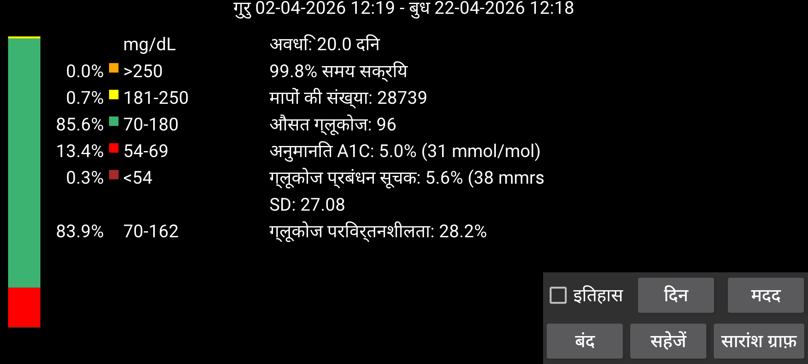
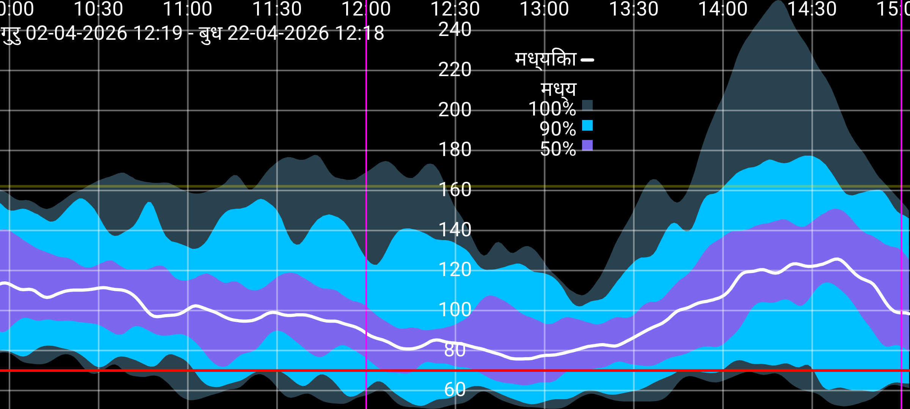

कुछ आंकड़े AGP से कुछ छोटे संशोधनों के साथ लिए गए हैं।
विश्लेषण किए गए दिनों की संख्या को दिन बटन दबाकर संशोधित किया जा सकता है। अवधि स्क्रीन के अंत स्थिति के समय पर समाप्त होती है और निर्दिष्ट दिनों की संख्या पीछे के समय तक फैलती है। सभी डेटा केवल हर मिनट सेंसर से ब्लूटूथ के माध्यम से प्राप्त ग्लूकोज मानों पर आधारित हैं (Juggluco में स्ट्रीम कहा जाता है)।
स्क्रीन के बाईं ओर कुछ ग्लूकोज श्रेणियों के भीतर आने वाले मापनों का प्रतिशत है। मानक श्रेणियाँ हमेशा दिखाई जाती हैं। जब बायां मेन्यू->सेटिंग्स->डिस्प्ले में एक गैर-मानक लक्ष्य सीमा निर्दिष्ट की जाती है, तो उस लक्ष्य सीमा का श्रेणी में समय मानक श्रेणियों के नीचे प्रदर्शित होता है।
समय का प्रतिशत जब Juggluco ने सेंसर से ग्लूकोज मान प्राप्त किए।
औसत ग्लूकोज से एक पुराने सूत्र के साथ HbA1c का अनुमान लगाता है (Nathan et al (2008))। एक कैलकुलेटर के लिए https://professional.diabetes.org/diapro/glucose_calc देखें।
इसे यहाँ इस स्थिति में दिखाया गया है कि लोग Abbott के Libre 2 ऐप में दिखाया गया मान ढूंढ रहे हैं। GMI इस सूचक के लिए 2018 का प्रतिस्थापन है।
एक निश्चित सामान्य रूप से उपयोग किए जाने वाले सूत्र (देखें https://www.jaeb.org/gmi/) के साथ औसत ग्लूकोज से गणना की जाती है। यह HbA1c (जिसे A1c भी कहा जाता है) का अनुभवजन्य रूप से निर्धारित अनुमान है, प्रतिशत और mmol/mol में दिया गया। मेरे लिए व्यक्तिगत रूप से अनुमानित A1C GMI से बेहतर भविष्यवक्ता है, पर इसका उपयोग Abbott के Libre 3 ऐप में किया जाता है।
भिन्नता का गुणांक, %CV=(SD/mean)*100%, ग्लूकोज परिवर्तनशीलता के एक माप के रूप में। भिन्नता का उच्च गुणांक का मतलब है कि ग्लूकोज मान औसत से और दूर हैं।
यह निर्दिष्ट दिनों के आपके ग्लूकोज मानों की एक रिपोर्ट प्रस्तुत करता है। इसमें आंकड़े, अवलोकन ग्राफ़ और अलग-अलग दिनों की एक छवि शामिल है। आप इसे PDF में प्रिंट कर सकते हैं और अपने स्वास्थ्य देखभाल पेशेवर को ई-मेल कर सकते हैं। आपके पास बायां मेन्यू→सेटिंग्स→डेटा आदान-प्रदान→वेब सर्वर सक्रिय होना चाहिए। यह वेब ब्राउज़र में url http://127.0.0.1:17580/x/report खोलता है।
(केवल तब मौजूद जब कम से कम 9 दिनों के स्ट्रीम ग्लूकोज मान उपलब्ध हों)।
इस अवधि के सभी स्ट्रीम ग्लूकोज मान एक संयुक्त ग्राफ़ बनाने के लिए लिए जाते हैं जो दिन के हर मिनट के लिए दिखाता है कि ग्लूकोज मान कैसे वितरित थे। काली या सफेद मध्यिका रेखा वह ग्लूकोज मान दिखाती है जिसके नीचे दिन के हर मिनट 50 प्रतिशत ग्लूकोज मान होते हैं। सबसे हल्का नीला वह क्षेत्र है जिसमें सभी मान होते हैं। कुछ गहरा नीला मध्यिका के आस-पास का क्षेत्र जिसमें 90% मान होते हैं। सबसे गहरा नीला 50 प्रतिशत मानों की मध्यिका के आस-पास का क्षेत्र। यदि आप क्षेत्रों की सीमाओं को रेखाओं के रूप में देखते हैं, तो आप इसे इस तरह भी चित्रित कर सकते हैं: सबसे निचली रेखा के नीचे 0% मान हैं, दूसरी सबसे निचली रेखा (सबसे हल्के नीले और मध्यम गहरे नीले के बीच) के नीचे 5% मान, तीसरी रेखा (सबसे गहरे नीले और मध्यम गहरे नीले के बीच) के नीचे 25% मान, काली रेखा के नीचे 50% मान। उसके बाद 75%, 95% और 100%।
सौंदर्य संबंधी कारणों से वक्र को एक द्विपद फ़िल्टर से चिकना किया जाता है।
सारांश ग्राफ़ को बंद करने के लिए स्क्रीन पर टैप करें, सिवाय इसके कि जब बाईं या दाईं सीमा पर टैप करने पर ग्राफ़ दिन में आगे या पीछे जाता है। वक्र को स्क्रॉल करके भी आगे और पीछे ले जाया जा सकता है। समय स्केल को दो उंगलियों को एक दूसरे की ओर या एक दूसरे से दूर ले जाकर बदला जा सकता है।